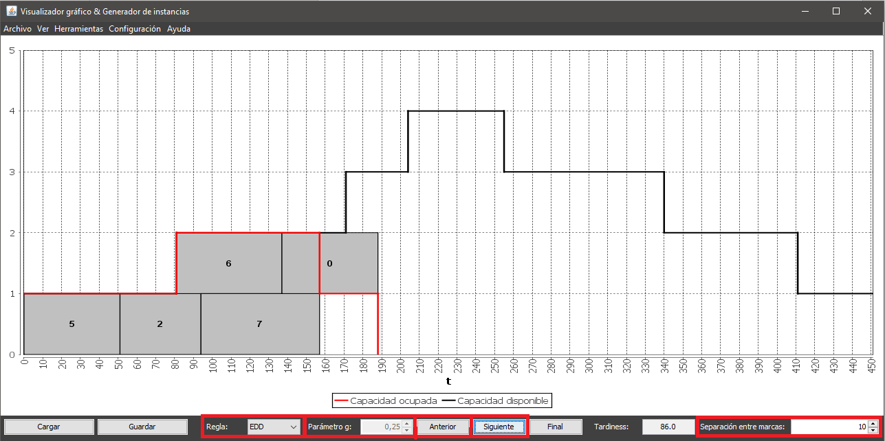

Para realizar una planificación paso a paso pueden utilizarse los botones Anterior y Siguiente de la parte inferior central de la ventana principal y seleccionar una regla en el desplegable indicado por la etiqueta Regla en la parte inferior izquierda de la ventana principal
La opción de modificar el valor del parámetro g solo está disponible si la regla seleccionada previamente es ATC, y permite escoger valores entre 0.01 y 1.
También puede modificarse el valor numérico especificado junto a la etiqueta Separación entre marcas para escoger con que separación inicial entre marcas de graduación se desea visualizar la instancia al planificarla.
Cada vez que se planifique una nueva tarea se actualizará el valor del tardiness, mostrado en la parte inferior derecha de la ventana principal.